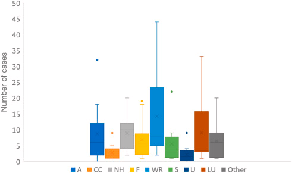

5 Discovering Google Earth Engine
5.1 Summary
Google Earth Engine is a cloud-based geospatial processing platform with incredible capabilities for environmental monitoring and analysis. It is well-appreciated for its ability to analyse large-scale remote sensing data within seconds without relying on local computers’ storage and memory. Data processing in GEE is facilitated by utilizing JavaScript within the platform’s web interface (or Code Editor) or with Google Colab notebook, employing Python API (combined with the visualisation power of the geemap library) for a more familiar data science computing environment.
In summary, the Google Earth Engine (GEE) platform provides users with:
Extensive data access: Explore petabytes of free, ready-to-use remote sensing imagery and other products, not to mention many more contributed by the Awesome GEE Community.
Powerful processing: Leverage Google’s computational infrastructure for high-speed parallel processing and advanced machine learning algorithms.
Scale and Projection automation: GEE automatically populates the appropriate pixels depending on the scale of the analysis and resamples if needed when producing the output. It also automatically converts all data into the Mercator projection when displayed.
Flexible development environment: Utilize a library of Application Programming Interfaces (APIs) with coding support for popular languages like JavaScript and Python. However, the GEE Python API currently lacks robust documentation and comprehensive interactive visualization capabilities compared to the JavaScript API. The
geemapPython package bridges this gap. Built upon open-source libraries likeearthengine-api,folium,ipyleaflet, andipywidgets, it empowers users to conduct interactive analysis and visualization of Earth Engine datasets within a Jupyter environment through intuitive coding.
Here are a few things one can accomplish with Google Earth Engine:
Joins with
ee.Filter() and join.apply()Zonal statistics with
reduceRegion()orreduceNeighborhood().Linear regression with
linearFit()andlinearRegression()Machine Learning including supervised/unsupervised classification and deep learning with TensorFlow to be covered in subsequent weeks
Visualisation and web geospatial applications with GEE data. Some prominent applications will be discussed below
5.2 Application
While Google Earth Engine’s potential applications have not fundamentally changed the field of remote sensing analysis, its impact lies in revolutionizing the accessibility and scale of such work. Previously, researchers faced significant hurdles in downloading massive datasets and processing cumbersome raster files. Earth Engine eliminates these obstacles, allowing for faster, more efficient, and ultimately more creative analysis of potentially planet-level scale.
An investigation into the literature that used GEE in its methodology revealed that the most popular applications are Water Resources, Land Use, Agriculture, and Natural Hazards (Pérez-Cutillas et al. 2023). It is interesting to see that climate change and urban spatial research seem to be trailing behind other fields in employing GEE, but it is possible that the author’s classification obscures the fact that a piece of research could belong to two or more application areas (e.g. flood risk analysis could be considered Natural Hazards or Climate Change).

Here are some application areas of GEE, along with specific research examples.
Flood risk assessment and mitigation: Example: “Urban flood risk assessment using Sentinel-1 on the Google Earth engine: A case study in Thai Nguyen city, Vietnam” by Mai Sy et al. (2023)
Land Use/Land Cover and Change Detection: Example: “Characterizing annual dynamics of urban form at the horizontal and vertical dimensions using long-term Landsat time series data” by Wang et al. (2023)
Agriculture and Food Security: Example: “Drought Monitoring Using Landsat Derived Indices and Google Earth Engine Platform: A Case Study from Al-Lith Watershed, Kingdom of Saudi Arabia” by Ejaz et al. (2023)
Climate Disaster Monitoring: Example: “A google earth engine approach for anthropogenic forest fire assessment with remote sensing data in Rema-Kalenga wildlife sanctuary, Bangladesh” by Mohammed et al. (2023)
Urban Heat Island Monitoring: Example: “Monitoring the Impact of Land Cover Change on Surface Urban Heat Island through Google Earth Engine: Proposal of a Global Methodology, First Applications and Problems” by Ravanelli et al. (2018)
It is worth noting that in much of the research literature I have encountered, GEE is often highlighted and used prominently for applications in regions of the Global South. This is possibly due to various reasons:
Lack of reliable up-to-date geospatial datasets for urgent local issues (flood, drought, deforestation, etc.), motivating the public sector and researchers to be resourceful by using freely available Remote Sensing data.
Low reliance on the old geospatial tech stack, thus can nimbly adopt GEE without much issue.
Consequently, low/No computing costs compared to traditional methods.
It would be interesting to see how the developing world will pioneer more ground-breaking research methodologies leveraging GEE.
5.3 Reflection
Working with Google Earth Engine (GEE) was a revelation. Compared to traditional methods like SNAP or accessing data from Copernicus Open Access Hub, GEE offered exceptional efficiency in acquiring satellite imagery.
This introduction to GEE came with a crash course in JavaScript programming, which I had not been exposed to before. There were also concepts such as client vs server-side functions that are particular to GEE that one has to wrestle with when programming. In the future, I will explore how to replicate what will be introduced in both CASA0023 and CASA0025 regarding Google Earth Engine in a Python environment, either via the API or via geemap library, to integrate it with other data science workflows. I’m particularly interested in exploring GEE’s capabilities for studying and predicting temporal changes, specifically aiming to showcase the impact of global warming, flooding, droughts, etc. Therefore, leveraging GEE and being able to tap into Python Machine Learning libraries will be a powerful combination.